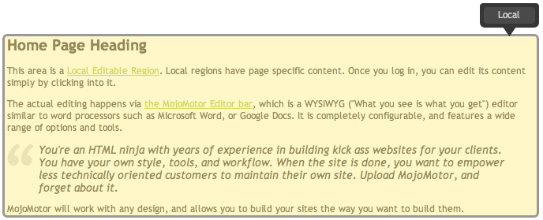
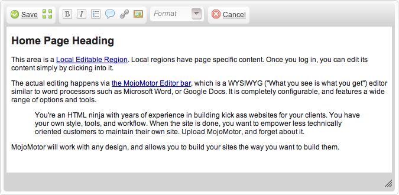

MojoMotor Regions
Simply put, a region is an editable area of your Layout. They are identified by adding special CSS classes into your markup.
Page Regions
Page regions are areas of unique content on each page.
Global Regions
Global regions are repeating areas of content, that appear on multiple pages. Changing a Global region on any page will change it across all pages where it is found that are based on the same layout.
Global Regions are per layout, not per site. Page Regions are per page.
Both Page and Global regions are not intended to be nested inside other regions.
Mojo tags cannot be used inside of editable regions.
Super Global Regions
When a Global region is used in a layout that is embedded in another layout, the Global region will work across all layouts that embed that layout. The system will automatically identify these regions as 'Super Global' in the editor for clarity. In all other respects, a Super Global works just like a Global region.
Creating regions as an Admin member
Because editable regions live in layouts, and only admin-members can access layouts, the editable regions must be created by admin users. To add one, simply wrap the content in any block element (for example, <div>, <p> or <li>). This element should then be given the special CSS class "mojo_page_region" (for pages that require different content on each page), or "mojo_global_region" (if you are creating global regions with the same content across multiple pages). You can assign that element an id attribute (for tracking), and if you don't assign one, MojoMotor will create one for you (adding your own id attributes is recommended).
<!-- example of unmarked code -->
...
<h1>Page Title</h1>
<h2>sub-title, common to every page</h2>
<p>We'll make this paragraph editable</p>
becomes
<!-- example of marked-up code -->
...
<h1>Page Title</h1>
<h2>sub-title, common to every page</h2>
<div id="page_content" class="mojo_page_region">
<p>We'll make this paragraph editable</p>
</div>
Using Regions
If the MojoMotor toolbar is exposed, regions are highlighted for you. To edit the content of a region, simply click into it. MojoMotor will spawn the Editor for you.
Example of regions visible to a logged in user.

Example of the same region in WYSIWYG edit mode.
